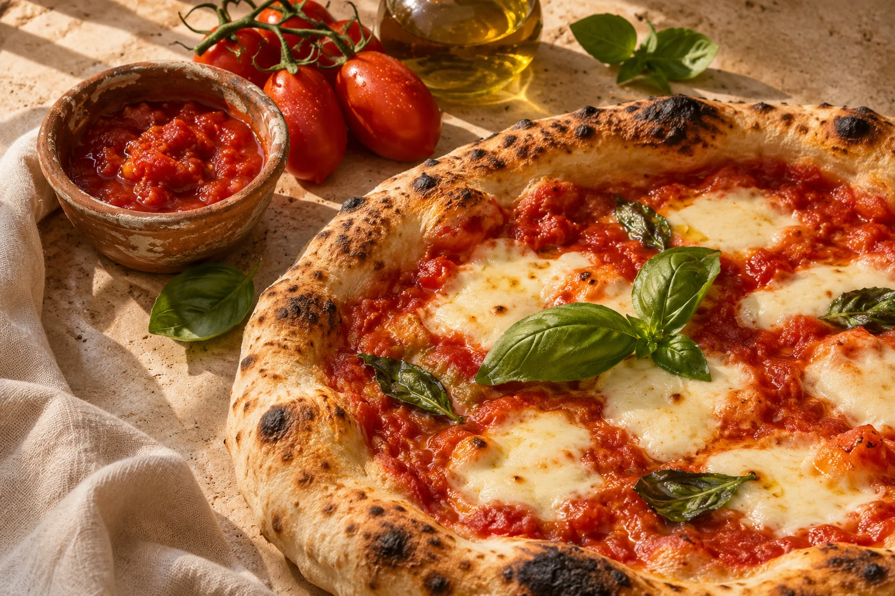
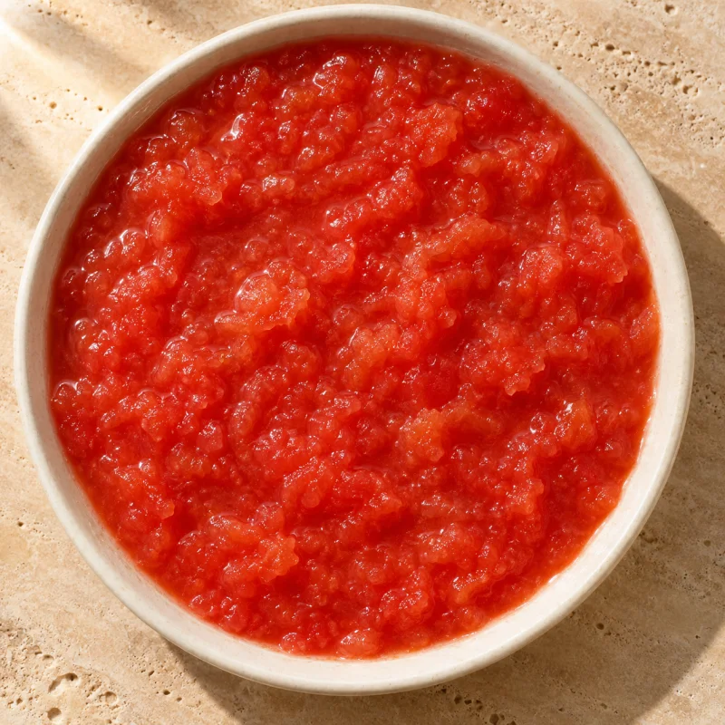

01 / SGRONDATAORIGEM
ITÁLIA
ITÁLIA
PRATICIDADE PARA O SEU PREPARO
Polpa Fina
Sgrondata
Tomate triturado, sem pele e sem sementes. Uma base pronta para receber o tempero da sua casa.
POMODORO ITALIANO · VIANDER BRASIL
Tomates italianos para quem leva o sabor a sério. Polpa fina e pelati para a rotina de pizzarias, restaurantes e cozinhas profissionais.
Origem italiana. Atendimento comercial no Brasil.

DOIS FORMATOS. MUITAS POSSIBILIDADES.
Escolha a textura que combina com o seu preparo. O sabor italiano é o ponto de partida.
PRATICIDADE PARA O SEU PREPARO
Tomate triturado, sem pele e sem sementes. Uma base pronta para receber o tempero da sua casa.
 ORIGEM
ORIGEMTEXTURA PARA A SUA CRIAÇÃO
Tomates inteiros e pelados, em conserva. A liberdade de criar molhos com a textura que você procura.
Polpa fina ou pelati? Descubra o que faz sentido para o seu cardápio.
Compare os produtosVEJA O QUE MUDA NO PREPARO
Uma base já triturada ou tomates inteiros para trabalhar à sua maneira. Qual combina com a sua receita?

01 / POLPA FINA SGRONDATA
Uma base de tomate sem pele e sem sementes para receber o tempero da casa.
Conhecer a polpa fina
02 / TOMATE PELATI SALSATI
Tomates inteiros em conserva para esmagar ou processar conforme a receita.
Conhecer o pelatiImagens ilustrativas de textura. Consulte o rótulo e a ficha técnica de cada produto.
DA MISE EN PLACE AO ÚLTIMO PEDIDO
Do molho da pizza à receita autoral: o ingrediente certo acompanha a sua maneira de cozinhar.
Uma base de tomate para ganhar o seu tempero e fazer parte da identidade da sua pizza.
Explore a polpa finaTextura e versatilidade para molhos de massa, lasanhas, sopas e preparações da casa.
Explore o pelatiTomates italianos em embalagens profissionais para compor o seu portfólio de food service.
Converse com vendasPRAZER, VIANDER BRASIL.
A Viander Brasil aproxima os tomates italianos de quem cozinha profissionalmente. Nossa linha reúne polpa fina e tomates pelados para pizzarias, restaurantes e operações de alimentação.
A importação e a distribuição são realizadas pela Agrobrokers Importação e Exportação Ltda., na Zona Cerealista de São Paulo. Um contato no Brasil para conversar sobre o ingrediente que vai para a sua cozinha.
Vamos conversar?ANTES DE COLOCAR A MÃO NA MASSA
Informações para escolher o tomate e dar o próximo passo.
Leia nosso guia de usoA Polpa Fina Sgrondata é o tomate já triturado, sem pele e sem sementes, indicado para bases de pizza e molhos. O Tomate Pelati Salsati contém tomates inteiros pelados em conserva e permite ajustar a textura durante o preparo.
Sim. A Polpa Fina Sgrondata e o Tomate Pelati Salsati são de origem italiana. No Brasil, a importação e a distribuição são realizadas pela Agrobrokers Importação e Exportação Ltda., em São Paulo.
A Polpa Fina Sgrondata está disponível em lata de 4,050 kg. O Tomate Pelati Inteiro Salsati está disponível em lata de 2,550 kg. Consulte a equipe comercial para disponibilidade e condições de compra.
Solicite um orçamento pelo WhatsApp ou pelo e-mail vendas@viander.com.br. Informe o produto, sua cidade e o volume desejado. A equipe comercial confirma disponibilidade, pedido mínimo, frete e condições para a sua região.
A Polpa Fina Sgrondata é uma opção para quem busca uma base de tomate já triturada, pronta para receber o tempero da casa. O pelati também pode ser utilizado, ajustando a textura conforme a receita. Consulte o guia para comparar as duas opções.
O PRÓXIMO BOM PRATO COMEÇA AQUI
Conte o que você procura. Nossa equipe comercial ajuda com disponibilidade, condições e a escolha do produto.
Prefere falar direto?(11) 99936-5401vendas@viander.com.br